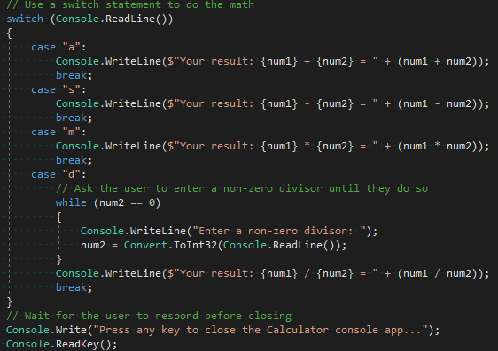
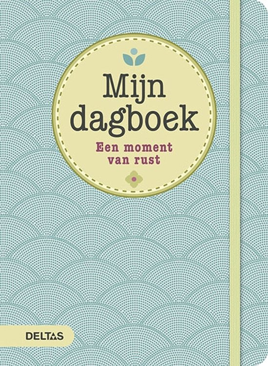

Inhoud
- Mijn (tech) skills aan het einde van de opleiding
- Mijn soft skills straks
- Wat wil ik bereikt hebben: producten die ik heb gemaakt / kan maken.
- Na het Ma! Opleiding hierna? Of meteen werken?
- Mijn droombaan dagboek
- Een andere droom
Ik kan gebruik maken van C#
Ik kan Games maken in Unity
Ik kan basis sites maken
Ik ben socialer.
Ik Kan beter samenwerken.
Ik ben goed in contact leggen.


Ik wil goed zijn in Java, C# en de basis van HTML, CSS en javascript.
Ik wil goed games kunnen maken.
Ik wil goed in een team kunnen werken.
Na het deze opleiding zou ik misschien nog naar de HBO willen doen voor game design. Dat is omdat ik graag ook de verhalen van games wil schrijven. Misschien ga ik tijdens die opleiding wel ergens werken of misschien een bedrijf starten met klasgenoten. We zouden dan games maken met elkaar. We zouden ook iemand van de game artists moeten hebben in ons team. Een ander alternatief is dat ik na mijn stage die ik in Japan wil doen klaar ben ik daar ga wonen. Misschien verhuis ik dan wel na een paar jaar terug naar Nederland.


Om 10:00 klok ik in.
Om 11:00 ga ik een vergadering in voor ons project.
Om 12:00 ga ik verder aan het werk.
Om 13:00 heb ik een lunch pauze.
Om 13:30 ga ik verder met werken.
Om 18:00 klok ik uit.
Een andere droom van mij is Het schrijven van game verhalen of gewoon verhalen in het algemeen. Ik heb veel spellen gespeelt met een verhaal die echt goed zijn, beter dan elke film en serie ooit. Ik zou ook ooit zo iets willen maken. Dat is een andere droom van mij.